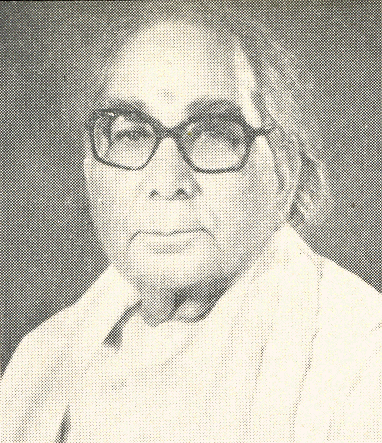

ಮಲ್ಲಿಕಾರ್ಜುನ ಗೌಡ್

ಪ್ರಮುಖ ಅವಧಿಗಳು:
ರಕ್ಷಣಾ ಸಚಿವಾಲಯ, ರಾಜ್ಯ ಸಚಿವ
೧೯೯೩ - ೧೯೯೬, ೧೯೯೫ - ೧೯೯೬
ರೈಲ್ವೆ ಸಚಿವಾಲಯ, ರಾಜ್ಯ ಸಚಿವ
೧೯೯೧ - ೧೯೯೩, ೧೯೯೫ - ೧೯೯೫
ಸಂಸದೀಯ ವ್ಯವಹಾರಗಳ ಸಚಿವಾಲಯ, ರಾಜ್ಯ ಸಚಿವ
೧೯೯೪ - ೧೯೯೬

3 ನೇ ಇಂದಿರಾ ಗಾಂಧಿ ಸಚಿವಾಲಯ
ರೈಲ್ವೆ ಸಚಿವಾಲಯ
ಉಪಮಂತ್ರಿ
ಸಂಸದೀಯ ವ್ಯವಹಾರಗಳ ಸಚಿವಾಲಯ
ಉಪಮಂತ್ರಿ
ಶಿಕ್ಷಣ ಸಚಿವಾಲಯ
ಉಪಮಂತ್ರಿ
ರೈಲ್ವೆ ಸಚಿವಾಲಯ
ಉಪಮಂತ್ರಿ
ಸಂಸದೀಯ ವ್ಯವಹಾರಗಳ ಸಚಿವಾಲಯ
ಉಪಮಂತ್ರಿ
ಮಾಹಿತಿ ಮತ್ತು ಪ್ರಸಾರ ಸಚಿವಾಲಯ
ಉಪಮಂತ್ರಿ
ಕೆಲಸ ಮತ್ತು ವಸತಿ ಸಚಿವಾಲಯ
ಉಪಮಂತ್ರಿ
ಯುವ ವ್ಯವಹಾರಗಳು ಮತ್ತು ಕ್ರೀಡಾ ಸಚಿವಾಲಯ
ಉಪಮಂತ್ರಿ
ಸಂಸದೀಯ ವ್ಯವಹಾರಗಳ ಸಚಿವಾಲಯ
ಉಪಮಂತ್ರಿ
ರಾಜೀವ್ ಗಾಂಧಿ ಸಚಿವಾಲಯ
P. V. ನರಸಿಂಹರಾವ್ ಸಚಿವಾಲಯ
3 ನೇ ಇಂದಿರಾ ಗಾಂಧಿ ಸಚಿವಾಲಯ

1_Upload_2429.pdf
1_Upload_2415.pdf

ಇಂದಿರಾ ಗಾಂಧಿ
o-Indira_Gandhi.htmlಪ್ರಧಾನ ಮಂತ್ರಿ
೧೪ ಜನವರಿ ೧೯೮೦ - ೧ ನವೆಂಬರ್ ೧೯೮೪

ಕಮಲಾಪತಿ ತ್ರಿಪಾಠಿ
o-Kamalapati_Tripathi.htmlಕ್ಯಾಬಿನೆಟ್ ಮಂತ್ರಿ
೧೪ ಜನವರಿ ೧೯೮೦ - ೧೮ ನವೆಂಬರ್ ೧೯೮೦
ಮಲ್ಲಿಕಾರ್ಜುನ ಗೌಡ್
o-Mallikarjun_Goud.htmlಉಪಮಂತ್ರಿ
೨ ಜೂನ್ ೧೯೮೦ - ೧೫ ಜನವರಿ ೧೯೮೨
ಸಂಬಂಧಿತ ಆದೇಶಗಳು
1_Upload_2429.pdf[37]೨ ಜೂನ್ ೧೯೮೦ಮಂತ್ರಿಗಳ ಪರಿಷತ್ತು1_Upload_2435.pdf[9]೯ ಜೂನ್ ೧೯೮೦ಪೋರ್ಟ್ಫೋಲಿಯೊ ಬದಲಾವಣೆ1_Upload_2430.pdf[37]೨೯ ಸೆಪ್ಟೆಂ ೧೯೮೦ಮಂತ್ರಿಗಳ ಪರಿಷತ್ತು1_Upload_2424.pdf[45]೨೧ ಅಕ್ಟೋ ೧೯೮೦ಮಂತ್ರಿಗಳ ಪರಿಷತ್ತು1_Upload_2443.pdf[3]೧೮ ನವೆಂ ೧೯೮೦ಪೋರ್ಟ್ಫೋಲಿಯೊ ಬದಲಾವಣೆ1_Upload_2411.pdf[43]೧೦ ಆಗಸ್ಟ್ ೧೯೮೧ಮಂತ್ರಿಗಳ ಪರಿಷತ್ತು1_Upload_2409.pdf[0]೨೧ ನವೆಂ ೧೯೮೧ಪೋರ್ಟ್ಫೋಲಿಯೊ ಬದಲಾವಣೆ1_Upload_2415.pdf[27]೧೫ ಜನವರಿ ೧೯೮೨ಪೋರ್ಟ್ಫೋಲಿಯೊ ಬದಲಾವಣೆ